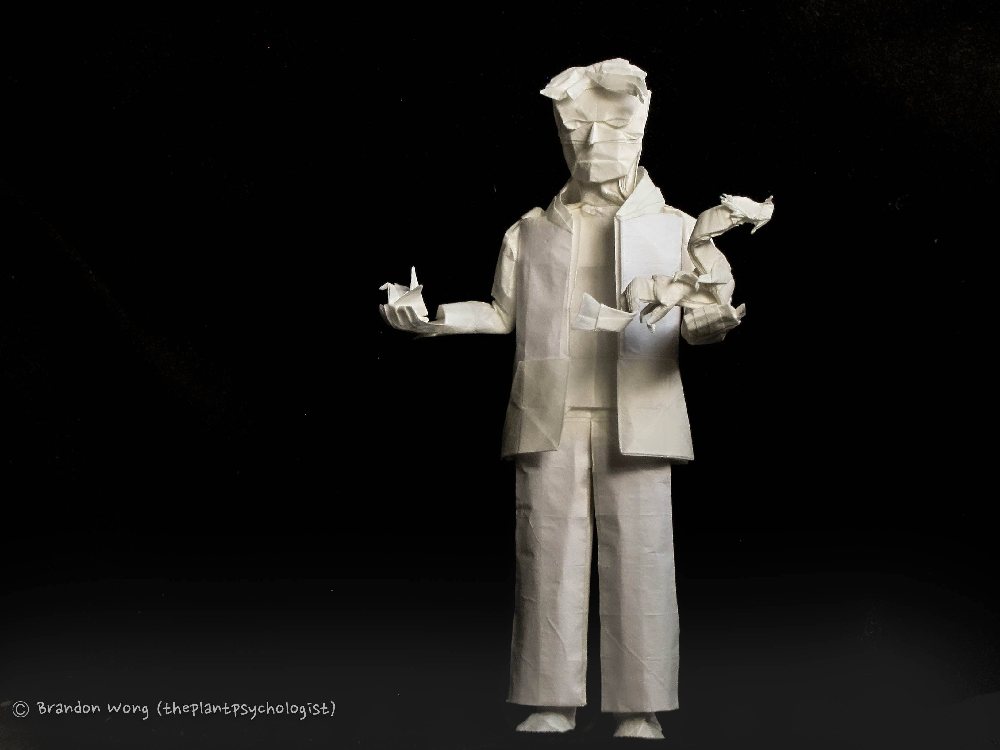
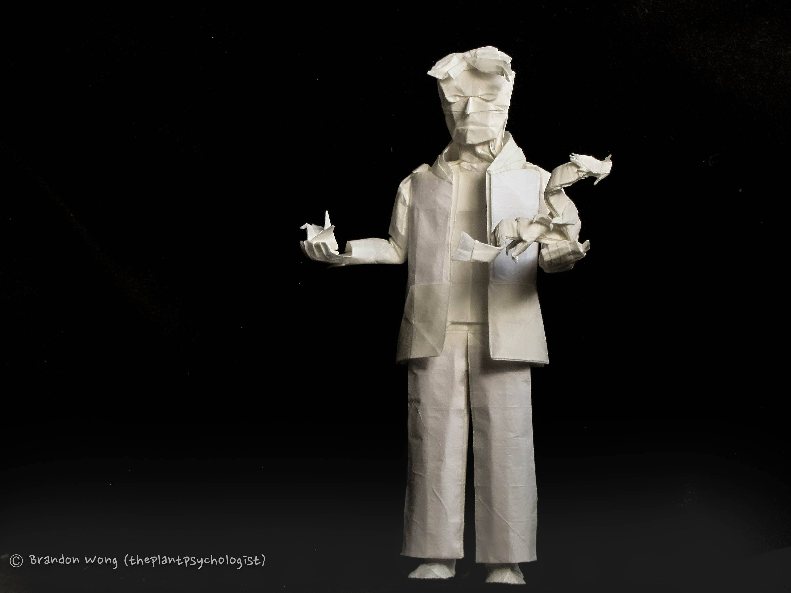

Back to portfolio
An Origami Journey
 

Designed and folded March 2021
Paper: 70cm wenzhou
As the title says, this design is a depiction of a folder's journey as we push ourselves to improve:
from a traditional crane in one hand, to a ryujin in the other hand, which is widely recognized
as one of the most difficult models to be folded. It also is an illustration of how far origami
as a technical art form has advanced, from cranes to ryujins, and is in itself a very technical piece.
Although I had mostly designed this for the unique structural and shaping challenges involved in
folding three models from the same sheet, I hope it can be a reminder that everyone starts from somewhere.
Everyone who has ever folded a ryujin (including myself) was once unable to fold much more than
a crane, and everyone who for now can only fold a crane has the potential to one day fold a ryujin
as well. So, stay inspired and keep pushing yourselves!

The most remarkable aspect of this crease pattern is how an entire
section (the ryujin area on the right) is on partials, and along the boundary between
the normal 40ths and the partial 80ths is a nice wall of level shifters (including one on the ridge of the pytha). This enables the model to have
quite extreme variation in crease density; ie, the ryujin can be much more detailed and smaller than,
say, the guy's pants.
Grid: 40x40 with partial 80ths